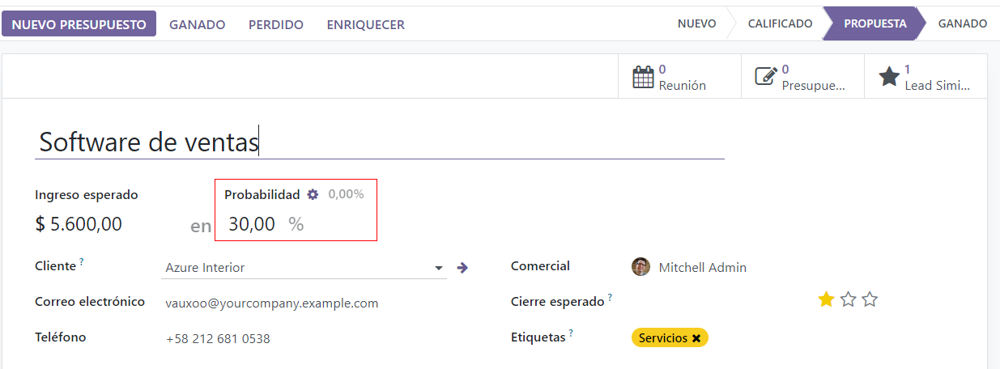
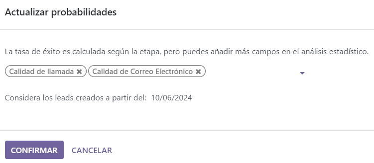
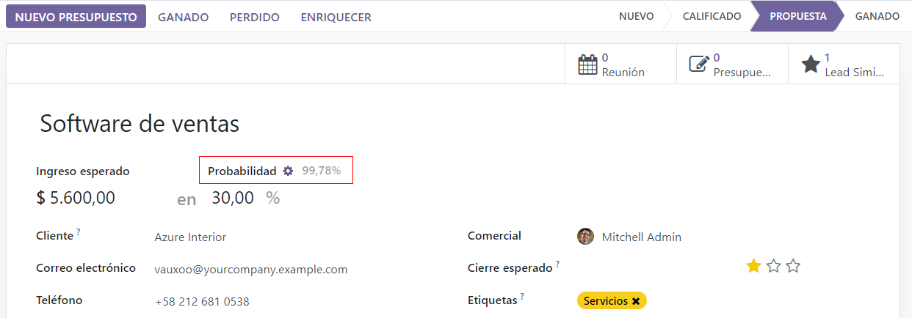

Asignación de leads con la puntuación predictiva de leads¶
La aplicación CRM de Odoo puede asignar leads u oportunidades a los equipos de venta o a los vendedores de manera automática. Una de las prácticas comunes de la industria es asignar los leads según las probabilidades que existen de ganarlo. Las empresas priorizan los leads que tienen mayor posibilidad de ganarse y son los primeros que se asignan a los vendedores apropiados.
Odoo calcula de manera automática la probabilidad de ganar cada lead mediante el método llamado puntuación predictiva de leads.
Puntuación predictiva de leads¶
La puntuación predictiva de leads es un modelo de aprendizaje automático que usa datos históricos de la aplicación CRM de Odoo para puntuar leads u oportunidades.
Conforme una empresa procesa oportunidades en el flujo CRM, Odoo recolecta información sobre las oportunidades que se ganan y se pierden. La puntuación predictiva de leads usa esta información para predecir qué tan probable es ganar cada lead u oportunidad nuevas.
Mientras más oportunidades se envíen al flujo de CRM, más información recolectará Odoo, lo que resulta en probabilidades más exactas.
La puntuación predictiva de leads de Odoo usa el clasificador Naive Bayes:
La probabilidad de éxito de cada oportunidad aparece en su formulario y se actualiza de manera automática a medida que la oportunidad avanza en el flujo de CRM.
Cuando una oportunidad pasa a la siguiente etapa, la probabilidad de éxito mejora de inmediato de acuerdo al algoritmo del puntaje predictivo de leads.
Configuración¶
El puntaje predictivo de leads siempre está activo en el CRM de Odoo. Sin embargo, las variantes que se usan para calcular la probabilidad de éxito se pueden personalizar en ajustes.
Para personalizar las variantes que se usan en la puntuación predictiva de leads, vaya a . En Puntuación predictiva de leads haga clic en el botón Actualizar probabilidades.
Después, haga clic en el menú desplegable para elegir qué variantes se tomarán en cuenta para la puntuación de leads.
Puede activar cualquiera de las siguientes variantes:
Estado: el estado geográfico del que proviene la oportunidad.
País: el país del que proviene la oportunidad.
Calidad del número telefónico: si hay un teléfono en la oportunidad o no.
Calidad del correo electrónico: si hay una dirección de correo electrónico en la oportunidad o no.
Origen: de dónde proviene una oportunidad (por ejemplo, motor de búsqueda o red social).
Idioma: el idioma que se especifica que una oportunidad.
Etiquetas: las etiquetas de la oportunidad.
Nota
Las variantes Etapa y Equipo siempre están activas. Etapa se refiere a la etapa del flujo de CRM en la que se encuentra una oportunidad. Equipo se refiere al equipo de ventas al que se le asignó esta oportunidad. La puntuación predictiva de leads siempre toma en cuenta estas dos variantes sin importar cuáles de las variantes opcionales se seleccionaron.
Ahora, haga clic en el campo de fecha que se encuentra a un lado de la opción Considerar los leads creados a partir del: para seleccionar la fecha desde la que la puntuación predictiva de leads empezará a hacer los cálculos.
Finalmente, haga clic en Confirmar para guardar los cambios.
Cambiar la probabilidad de manera manual¶
Desde el formulario de la oportunidad usted puede cambiar la probabilidad de éxito de la misma. Solo haga clic en el número de probabilidad para editarlo.
Importante
Si usted cambia la probabilidad, se dejarán de hacer actualizaciones automáticas de probabilidad para la misma. La probabilidad ya no se actualizará de forma automática conforme la oportunidad avance en el flujo.
Para volver a activar la probabilidad automática, haga clic en el icono de engranaje a un lado del porcentaje de la oportunidad.
Asignar leads según la probabilidad¶
En el CRM de Odoo es posible asignar leads y oportunidades según reglas específicas. Se deben crear reglas de asignación que tomen en cuenta la probabilidad de éxito del lead para darle prioridad a aquellos que tienen más probabilidad de ser exitosos.
Configurar la asignación por reglas¶
Para activar la asignación por reglas vaya a y seleccione la casilla junto a Asignación por reglas.
Puede configurar la función de asignación según las reglas para que funcione de manera manual, esto significa que el usuario tendrá que activar la asignación de forma manual. También puede elegir la configuración repetidamente, así Odoo activará la asignación por sí mismo según el tiempo que usted le ponga.
Para configurar la asignación automática de leads, seleccione guilabel:Repetidadmente para la sección En proceso. Después, podrá personalizar qué tan seguido se activará la asignación automática de leads en la sección Repetir cada.
Si configuró la asignación según las reglas para que se ejecute Repetidamente, todavía puede activar la asignación manualmente. Para hacerlo, haga clic en el icono de flechas circulares en los ajustes de Asignación según las reglas, o con el botón Asignar leads que se encuentra en la página de configuración del equipo de ventas.
Configuración de las reglas de asignación¶
Después, configure las reglas de asignación para cada equipo de ventas o vendedor. Estas reglas determinan qué leads se asignan a qué persona. Para empezar, vaya a y seleccione un equipo de ventas.
Vaya a la sección Reglas de asignación que se encuentra en el formulario de configuración del equipo de ventas y haga clic en Editar dominio para configurar las reglas que Odoo usa para determinar la asignación de leads para este equipo de ventas. Las reglas pueden incluir todo lo que sea relevante para la empresa o el equipo y puede agregar el número de reglas que sea necesario.
Haga clic en Agregar filtro para empezar a crear reglas de asignación. Haga clic en el botón + que aparece a la derecha de la regla de asignación para agregar otra línea. Si quiere borrar la línea haga clic en el símbolo de bote de basura.
Para crear una regla de asignación que dependa de la probabilidad de éxito de la oportunidad, haga clic en el menú desplegable que se encuentra en la izquierda de cada línea de regla de asignación y escoja Probabilidad.
En el menú desplegable que está a la mitad, seleccione el símbolo de ecuación deseado. Puede ser mayor que, menor que, mayor que o igual a, o menor que o igual a.
En el espacio de la dereche, ingrese el valor numérico deseado para la probabilidad. Finalmente, haga clic en Guardar para guardar los cambios.
Example
Para crear una regla de asignación en la que un equipo de ventas solo reciba leads que tengan una probabilidad de éxito del 20% o mayor, cree una línea de Dominio en el que ponga Probabilidad >= 20.
También puede configurar reglas de asignación separadas para diferentes equipos de venta. Desde la página de configuración de los equipos de venta, haga clic en la pestaña Miembros, después edite la sección Dominio y haga clic en Guardar para guardar los cambios.
Si configura la asignación automática de leads desde los ajustes, tanto los equipos de venta como los miembros de los equipos tendrán la opción de Saltar la autoasignación. Marque esta casilla para que una persona o equipo de ventas en particular no entre en la asignación automática de leads. Al hacer esto, podrá asignar leads a este vendedor o equipo de ventas de manera manual.
Para asignar leads de manera manual haga clic en el botón Asignar leads que se encuentra en la parte superior de la página de configuración del equipo de ventas. Al hacer esto, todos los leads que no se han asignado y van con el sector en el que se especializa este equipo se les asignarán.